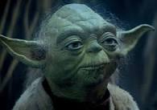

Yoda era uno de los más renombrados y poderosos Maestros Jedi durante toda la historia de la galaxia, y uno de los pocos Jedis de la República Galáctica en sobrevivir hasta la Guerra Civil Galáctica. El maestro más perceptivo de la Orden, él fungió como Gran Maestro durante las Guerras Clon y la fundación del Imperio Galáctico, después de la cual escapó para ocultarse de la Gran Purga Jedi. Aunque Yoda era uno de los miembros más respetados de la Orden, no era perfecto. Fue parcialmente debido a su falta de visión que la Orden Jedi fue destruida por el Señor Sith Darth Sidious, y la República reemplazada por el Imperio. Aun así, corregiría sus errores al jugar un rol importante en los eventos galácticos posteriores, entrenando a Luke Skywalker durante la Guerra Civil Galáctica. Después de su muerte en el 4 DBY, se convirtió en uno con la Fuerza.